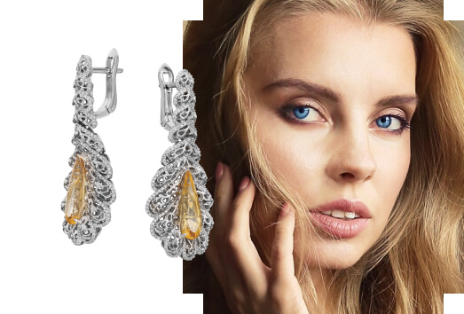
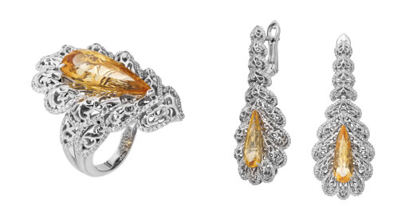
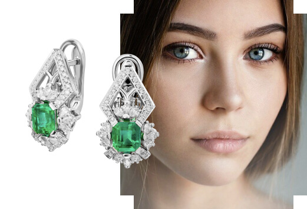
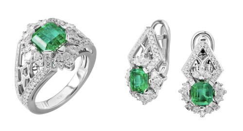
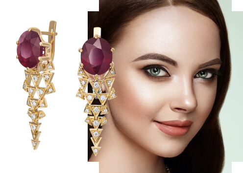
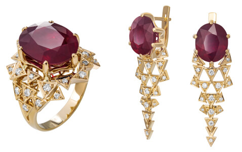
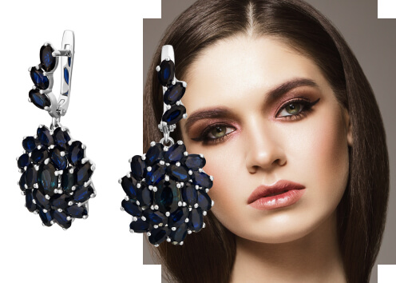
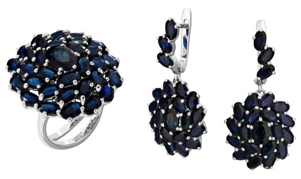
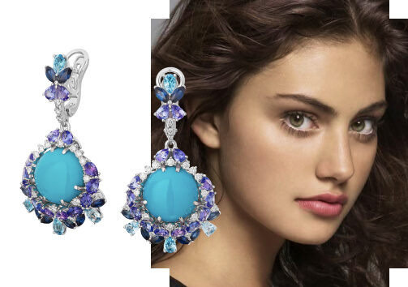

Безусловно, любая женщина знает о магнетизме, которым может обладать взгляд. Это одно из главных женских оружий. Подчеркнуть глубину взгляда,
усилить выразительность можно при помощи макияжа или одежды. Но королевы стиля знают, что серьги с цветными камнями, подобранные под
цвет глаз - самый главный их козырь.
Самоцветы можно выбрать в тон глазам, а можно и сыграть на контрасте - так Ваш образ буквально впечатается в память окружающих. В данном письме
Вы найдете несколько рекомендаций по сочетанию противоположных оттенков.
|
Здравствуйте, Имя
Голубые и синие глаза

Чистые оттенки голубых и синих глаз встречаются редко, как правило, в них есть примеси обоих цветов или других оттенков -
коричневых, желтых, зеленых, серых. Так или иначе такая радужка имеет преимущественно холодный тон. Следовательно,
стоит выбирать украшения с камнями простых теплых цветов: золотистый, оранжевый, красный и другие.

Серые глаза

Серый цвет глаз является самым распространенным среди европейцев и россиян. Как и во всех случаях, здесь тоже не обходится без примесей других оттенков.
Что касается камней, то сероглазым людям подойдут бесцветные (бриллианты) или зеленые, розовые, лиловые минералы, но прозрачные и светлые.

Зеленые глаза

Только 2% населения Земли имеют зеленый цвет глаз. Обладатели чистого зеленого оттенка могут носить украшения с камнями любого цвета.
А если на Вашей радужке есть и другие тона, от серого до голубого, то универсальными цветами для Вас станут: красный, серый,
золотистый, желтый, фиолетовый.

Темно-карие глаза

Карий - самый распространенный цвет глаз. Создать контраст с темным оттенком довольно просто, для этого подойдут следующие цвета камней: синий, фиолетовый, зеленый.

Светло-карие глаза

Данный цвет глаз образован из смеси коричневого, зеленого и голубого цветов. Радужку светло-коричневого или орехового оттенка выделят бирюзовые,
розовые, пурпурные, синие и зеленые камни.

Если Вы хотите больше узнать о цветных камнях, чтобы определиться с выбором понравившихся украшений, обратитесь к блогу на сайте Maxim Demidov.
История, месторождения и свойства самоцветов специально для ценителей ювелирных изделий.
|